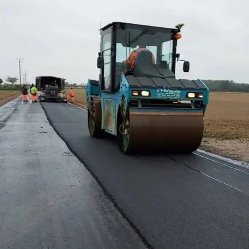

01 · 35 % de l'activité
Voirie
Création et réfection de voiries publiques ou privées, légères ou lourdes.
- Voiries, parkings, cours
- Plateformes industrielles
- Ronds-points et lotissements
- Enrobés noirs, rouges, béton désactivé
- Entretien des voiries communales et départementales